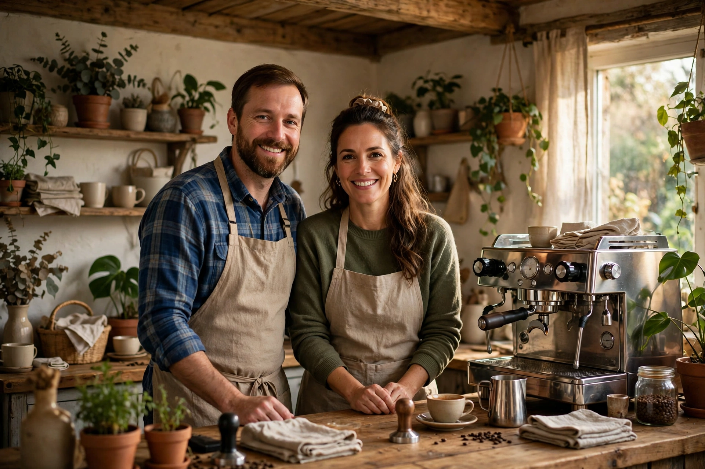
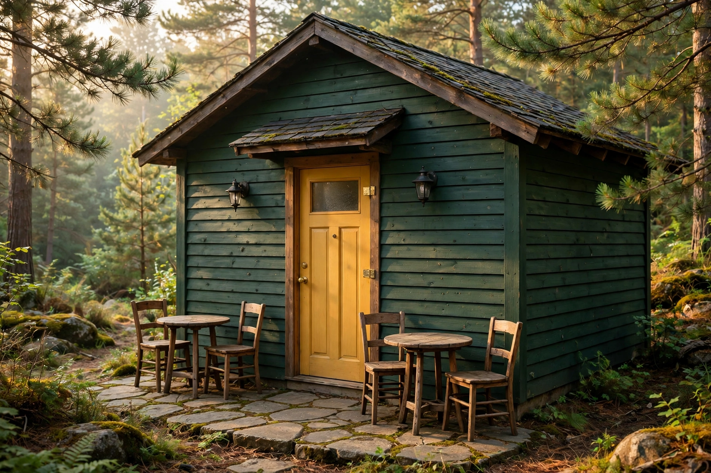

Silas Calloway
Founder
Silas founded Foxglove & Ember and leads the coffee side — the drinks, the bar, and the slow-morning rhythm of the house, pouring Foxglove Roast, a local favourite.
About us
A passion for coffee, family, and community. Foxglove & Ember is a husband-and-wife coffee shop in a little 1920s cottage on a quiet corner of Foxglove Hollow — built to slow you down.

Our story
We’re a husband-and-wife team born and raised here in Foxglove Hollow, and Foxglove & Ember came from wanting to build the kind of coffee shop we’d want to spend time in.
We’ve always loved the slower parts of coffee culture — morning coffee before work, hanging out in the kitchen talking for way too long, meeting friends for “just one cup” that turns into an hour. We wanted a space that felt comfortable like that. Nothing fancy or overdone. Just good coffee, good people, and a place you actually want to come back to.
Foxglove & Ember is our little corner of the Hollow — warm, welcoming, a little quirky, and very much of this place. We love natural materials, imperfect handmade details, and old things with character, and we’re creating a space that feels relaxed instead of polished.
“To bring people together over good coffee, good food, and a space that feels welcoming and real.”
Whether you’re stopping in on your way to work, hanging out with your kids, meeting a friend, or bringing your dog to the patio — we hope this place feels like home.
The owners
Founder
Silas founded Foxglove & Ember and leads the coffee side — the drinks, the bar, and the slow-morning rhythm of the house, pouring Foxglove Roast, a local favourite.
Baker
Wren bakes everything in-house — and every baked good at Foxglove & Ember is gluten-free. Her bakes were the most-awaited part of the Grand Opening.
The team
Mabel joined the Foxglove & Ember team for the opening season — part of the small crew welcoming Foxglove Hollow in, one cup at a time.
The cottage
The cottage was built in the 1920s and renovated into an open, light-filled coffee house — cozy little nooks to settle into, handmade details everywhere, and a sunny patio out front.
Nothing about this place is meant to feel too polished or too perfect. It’s being built with love, a little funk, and plenty of character — a funky, imperfect, deeply human kind of place.
14 Foxglove Lane, Foxglove Hollow — a quiet corner in the heart of the Hollow, where the pines meet bold, organic comfort.

Why we’re here
Everyone who walks through our doors should feel at home — an inclusive, respectful space where guests and staff feel seen, valued, and comfortable being themselves.
We treat our team with respect, fairness, and support. A healthy, valued team is at the heart of everything we do.
A space that feels lively, relaxed, and inviting — where laughter, good energy, and genuine connection are part of the everyday experience.
We take pride in what we create — from coffee to food to the space itself — valuing quality, intention, and the small details, while embracing the handmade and the imperfect.
“Leave a little happier.”